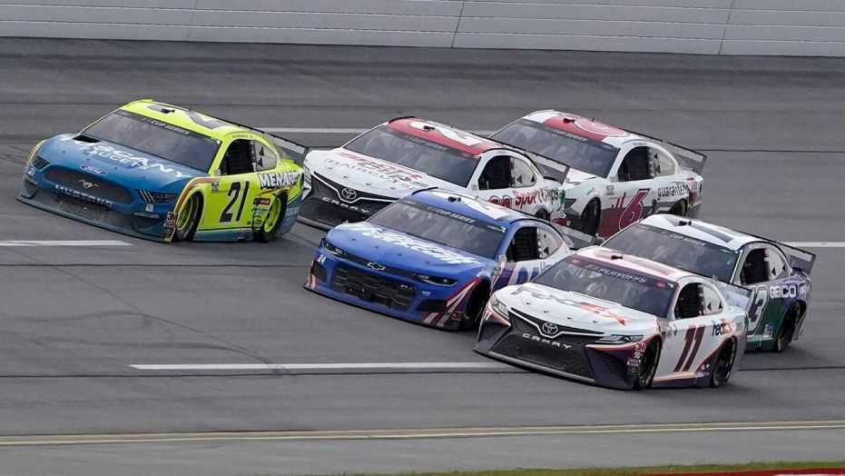
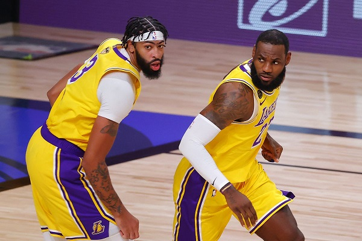

With just six races left in the 2020 NASCAR season, the pressure is building for both fans and drivers. This strange this year has caused a massive rift in the world of sports. While NASCAR was the first to get back on its feet, after only a 2 month break from March to May, the sport has seen its share of unfortunate events. Three drivers, including former champion Jimmie Johnson, have tested positive from COVID throughout the season. A series of short-sighted rule changes have allowed Kevin Harvick to completely dominate the field without any major competition. The October 4th race at Talladega Superspeedway, located in Talladega, Alabama, was the latest controversy the racing world has had to face. Talladega, being a 2.6 mile leviathan, is the black sheep of NASCAR tracks. Notable for being the primary setting of the 2006 Will Ferrell comedy, Talledega Nights, the track is one of the cornerstones of NASCAR history. The track’s large size and high-speed-racing have led to several unique rules being applied to races held there. The most controversial of these rules, is the “double yellow line”. In recent years, NASCAR painted a double yellow line towards the bottom of the track’s racing surface. Cars may not go under that line to advance their position, unless they are forced below the line by a competitor. This yellow line serves as an “out of bounds” area, so that the legal racing surface is clearly defined. However, the enforcement of this rule has been seemingly random, and very uncoordinated. In 2008, rookie Regan Smith was able to pass NASCAR champion Tony Stewart to win his first career race. This would be notable as Stewart clearly forced Smith under the yellow line, and Smith would bump Stewart’s car in order to not break the rule and get back on the track. Despite this clear violation of the rules by Stewart, he was not penalized for forcing Smith under the yellow line. Instead, Smith would be penalized for passing under the yellow line, and disqualified to finish last. This would be a very unpopular and hated decision, especially considering Stewart, being a multiple time champion, had to cheat to beat the underdog rookie, and got away with it. With the most recent Talladega race, this problem occurred again. Leader Matt DiBenedetto took the white flag and seemed on his way to win his first career NASCAR race. Denny Hamlin, who had won six races already in 2020 alone, was trying to make the pass for the win but couldn’t find a way around Matt’s car. Hamlin would go under the yellow line to make the race-winning pass. While this would normally be a clear violation of the rules, NASCAR decided to turn a blind eye and allow Hamlin to win. The salt in the wound, is that they would penalize DiBenedetto for “focing Hamlin under the yellow”, even though Hamlin was the one who initiated the pass, and DiBenedetto never tried to block or move Hamlin’s car. This controversial result has been the latest misstep in a botched 2020 season that many would like to forget.

The 2020 NBA Finals will go down in history as one of the most interesting matchups of the series’ history. On one side are the Los Angeles Lakers, led by the dynamic duo of all-time legend LeBron James and the big man Anthony Davis. The Lakers are historically one of the most successful NBA teams of all time with 16 championships, but the #17 here might be their most emotional. After the death of basketball icon Kobe Bryant in January, the city of Los Angles has been in a permanent state of mourning of the legend. A championship win here, especially considering LA’s last title was with Kobe in 2010, would be an emotional and heartfelt victory. On the other side of the court is one of the biggest underdogs in NBA finals history. The Miami Heat came in ranked the 7th seed and struggled through most of the season, but have turned it up to another level since arriving in the playoffs. They stunningly swept the #1 seed Milwaukee Bucks (who many considered the favorites to win the 2020 title), and have been on a roll since. The Heat, led by phenom Jimmy Butler, have been unpredictable and looking like the spoiler of the 2020 season. Right now the series is set a 3-2 in favor of the Lakers. While a championship is all but guaranteed for LA and LeBron, the Heat are the one team who has constantly defied the odds, so anything is possible. When the dust settles and it’s all said and done, the 2020 NBA finals will be one to remember.